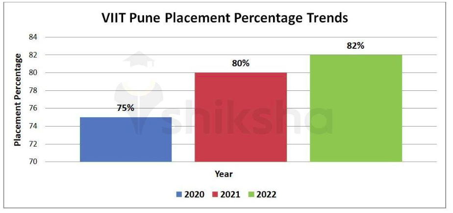

Established in 2002Vishwakarma Institute of Information Technology is a known reputed Institute, located in Pune, Maharashtra. Vishwakarma Institute of Information Technology offers 18 diverse courses for Degree in Full Time mode. Institute present diversified 12 UG programs, which are designed to meet the learning aspirations of students from various backgrounds. Vishwakarma Institute of Information Technology has been accredited with Grade A by NAAC. Its a private institute. When it comes to choosing a good Institute for higher learning, Vishwakarma Institute of Information Technology comes to mind. Student has the option to choose courses like M.E./M.Tech, MCA, B.E. / B.Tech with stream of Engineering and IT & Software Institute provides opportunity to students to gain proficiency & expertise in the specialization of Structural Engineering, Environmental Engineering, Mechanical Engineering, Computer Science Engineering, Signal Processing, Civil Engineering, Production Engineering, Instrumentation Technology, Chemical Engineering, Electronics & Communication Engineering, Information Technology, Artificial Intelligence & Machine Learning. Course offered by Vishwakarma Institute of Information Technology is well recognized by approving body like AICTE. Most importantly, these courses with 1170 seats are imparted at affordable fees, which increase accessibility and allow students to gain knowledge and skills in their chosen field. College provides good facilities and infrastructure like Auditorium, Boys Hostel, Cafeteria, Convenience Store, Girls Hostel, Gym, Hospital / Medical Facilities, Hostel, Labs, Library, Shuttle Service, Sports Complex, Wi-Fi Campus, Others - Seminar Hall, Bank and ATM, Parking, Facilities for Disabled Studentsto the students.
Programs Offered:

Placement Graph :
